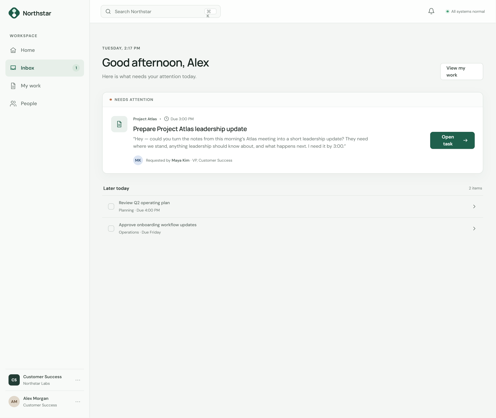

Northstar Labs AI Fluency at Work
A workplace learning system designed to help knowledge workers use generative AI with better judgment, stronger execution, and clear human ownership.
Adoption was not the real problem.
Approved AI tools were available, but everyday use was inconsistent. Some employees avoided AI because they were unsure when it was appropriate. Others trusted polished output too quickly or moved work forward without enough review.
Policy existed, but employees struggled to turn it into everyday decisions.
Experience ranged from hesitant first-time users to frequent AI users.
No consistent process existed for checking accuracy, omissions, bias, uncertainty, and risk.
There was no shared method for moving from task → AI → reviewed output → finished work.
Four decisions that travel with the work.
I designed the experience as an ecosystem rather than a standalone compliance course. The framework gives employees enough structure to make better decisions without pretending every situation can be reduced to a rule.
Before prompting, learners consider usefulness, privacy, stakes, and who could be affected. The first move is judgment—not tool use.
Use the tool when it meaningfully supports the work—not because it is available.
Use approved tools and work accounts; pause when the task becomes sensitive or high-stakes.
Make the mistake believable enough to matter.
The prototype begins with a normal request from Maya: turn meeting notes into a short leadership update. The AI draft sounds polished—but leaves out the vendor dependency, Thursday deadline, possible Friday milestone impact, and pending engineering decision.
Instead of explaining the principle first, the experience lets the learner feel the consequence and then reveals the framework.
Final high-fidelity prototype. The full interaction opens in Figma Make.

- Vendor confirmation needed Thursday.
- If delayed, Friday’s milestone may move.
- Engineering makes a go/no-go decision Thursday afternoon.
AI-generated draft
Project Atlas remains on schedule following successful completion of the design review and initial engineering testing. The team continues to make progress toward beta in early October...
Training teaches the process. Tools help people execute it.
I separated learning from reference content so the scenario could stay focused on decisions and consequences. The job aids carry the framework into real work without becoming miniature courses.
The resources are deliberately lightweight, task-based, and reusable after the learning experience ends.
AI Fluency Workflow
A practical check before AI-assisted work becomes real work.
Does this task benefit from AI?
Is any information sensitive or private?
Who could be affected?
Provide relevant context.
Be clear about the task.
Specify what a useful result needs to include.
Is it accurate and source-supported?
What is missing or overly certain?
Would I put my name on this?
Refine or correct.
Verify important information.
Follow normal process and own the final work.
Build a better prompt.
Good prompts clarify the work: what is happening, what you need, what information AI should use, and what boundaries it must respect.
Create a concise leadership update from the Project Atlas meeting notes. Use only the notes as the source. Preserve risks, deadlines, owners, unresolved issues, and uncertainty. Do not invent or overstate progress.
Measure the work, not just the course.
The evaluation plan centers on whether employees produce higher-quality AI-assisted work more efficiently while demonstrating responsible judgment. Confidence matters, but it is a supporting indicator rather than the finish line.
Quality of AI-assisted work
Accuracy, completeness, preservation of context and uncertainty, verification, and meaningful human review.
Time-to-acceptable-output
How long it takes to move from task start to a work product that meets the expected quality standard.
The undesirable outcome is preventable AI-related problems reaching downstream work. Success means issues are detected earlier, corrected earlier, and fewer reach final work.
Enough structure to support good judgment. Not enough to replace it.
Employees already had policy guidance. A repeatable workflow is easier to transfer across tasks than a long list of prohibitions.
A simple framework cannot cover every policy scenario.
Link back to AI Guidelines when the situation exceeds the framework.
No prior AI expertise is required, while optional scaffolds let experienced users move quickly.
Novices can feel overwhelmed; experts can feel slowed down.
Optional Prompt Guide, task-based library, and concise support.
The performance gap is judgment, not recall. Learners practice decisions instead of memorizing rules.
Immersion can increase cognitive load.
Short experience, controlled complexity, and reflection after meaningful decisions.
Privacy reminders appear where mistakes are likely rather than relying on memory.
Too many warnings become invisible or feel punitive.
Brief contextual reminders instead of repeated acknowledgement screens.
The designer still owns the decisions.
Accessibility was treated as a design requirement: keyboard access, visible focus, semantic structure, readable typography, sufficient contrast, descriptive labels, and no color-only meaning.
Generative AI accelerated brainstorming, interface exploration, iteration, and production support. I retained ownership of the needs analysis, learning strategy, performance outcomes, interaction logic, content decisions, accessibility requirements, evaluation approach, and final review.
Early prototyping reinforced the central idea of the project itself: AI can accelerate production, but the human remains responsible for the quality and judgment of the finished work.
A business problem leads to a performance framework, realistic practice, point-of-need support, and an evaluation strategy tied to quality and efficiency.